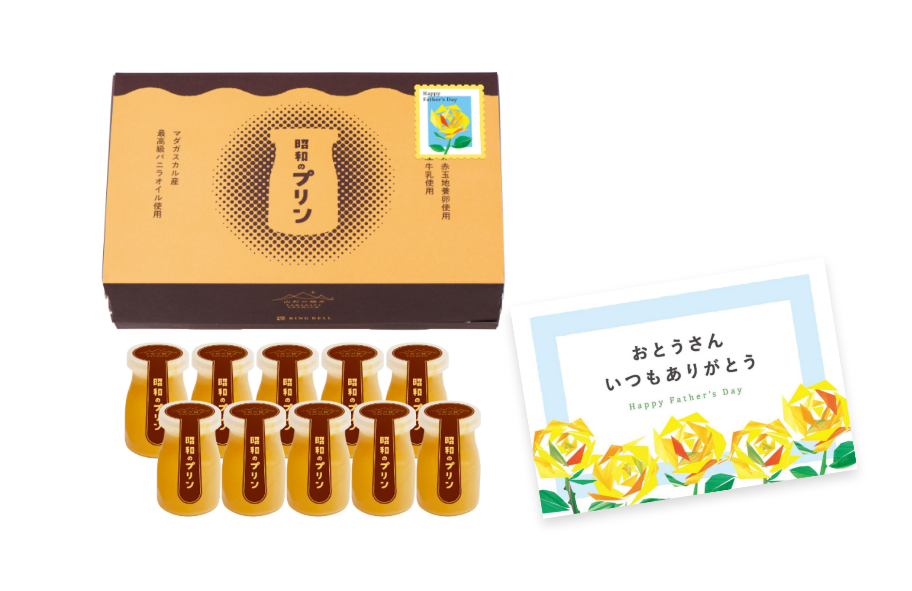
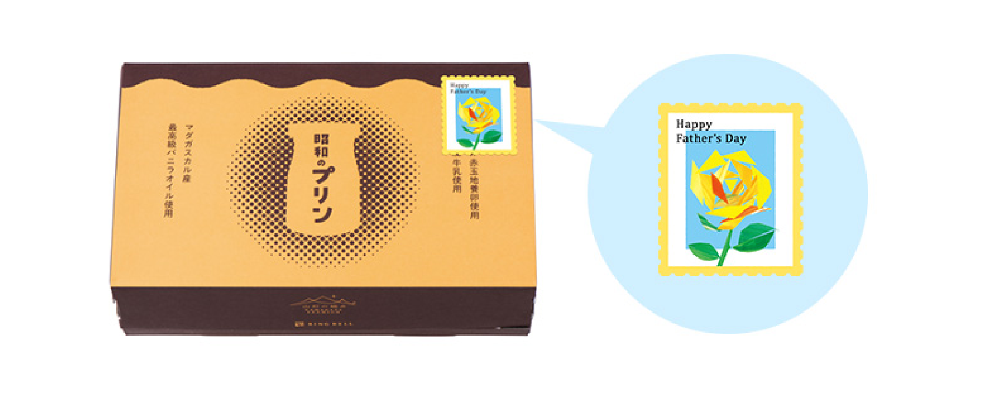
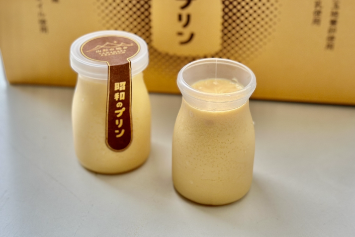
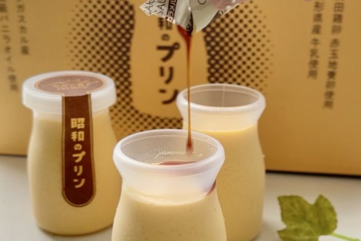
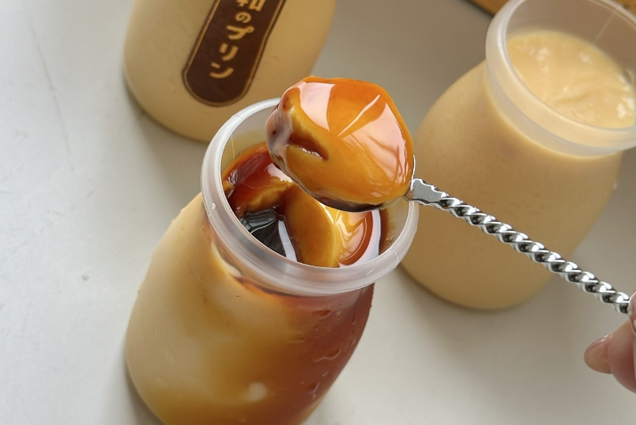
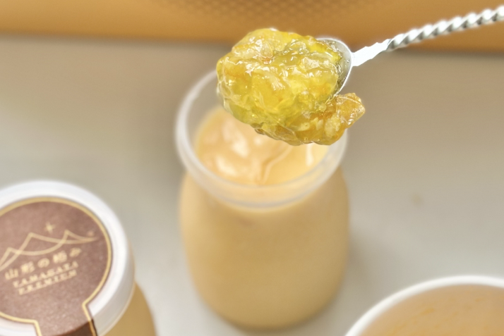

昭和のプリン

シンプルなこだわり素材でつくった、
懐かしいあの昭和のプリンの味
ここが 「極み」
- 想い出と積み上げた技で再現した昭和の味わいい
- 何通りもの組み合わせを試したどり着いた理想の味と食感
- 作り手おすすめの召し上がり方
父の日限定ギフト
父の日専用のシール・メッセージカードを添えた
父の日限定商品をご用意しました

父の日専用ギフトシール

父の日専用メッセージカード
「そうそう、こういう味だったね」と 懐かしむもよし「昔のプリンはこんなに贅沢だったんだ」と思うもよしココロも会話も弾む昭和の魔法の味をお届けします。
昨今の柔らかなプリンに比べると、ちょっと固め。そして口に含むと、しっかりとした卵の味とバニラのやさしい香りがふわりと広がるまさにあの懐かしい昭和のプリンの味です。
想い出と積み上げた技で再現した昭和の味わい
リンベルと共に、この「昭和のプリン」づくりを手掛けてくれたのは、山形県長井市で洋菓子店「ブランドォレ」を営む小松龍侍さん。試行錯誤を経てようやく探してた、この味と食感には、昭和時代まだ子供だった頃から、自分でプリンを作っていたという小松さんの技の積み重ねと想い出、そして地元・山形の食材への思い入れがたっぷり詰まっています。
何通りもの組み合わせを試したどり着いた理想の味と食感
卵白を温めてコシを切りながら牛乳と合わせ、丁寧に漉しなめらかにしたものを、87度で35分蒸し焼きにすることで、この「昭和のプリン」は作られます。ほどよい固さになる卵黄・卵白の量、卵臭さが強くなりすぎないぎりぎりの温度、中心まで熱が入り十分に殺菌できる時間など、何通りもの組み合わせの試行錯誤の末、スプーンですくうと少し固めで、口に含むと卵の味をしっかり感じることができる、「昭和のプリン」は完成しました。
作り手おすすめの召し上がり方
添えてあるカラメルの甘さに合わせ、プリンも甘さを控えめに作っています。 まず、ひと口目はそのまま、ふた口目はカラメルソースををかけて。3口目からはお好みに合わせてお召し上がりください。
レビュー
開封から味わいまで、
美食の専門家が徹底レビュー！
最大の魅力はその「かため食感」。口に入れると程よい密度とやわらかさが絶妙に広がります。
フードジャーナリスト 岩谷貴美 さん
-
純喫茶のメニューにありそうな、どこか懐かしい少し固めで濃厚な口ざわり

-
飽きずに楽しめるプリンとカラメルソースの絶妙なバランス

-
最大の魅力はその「かため食感」。スプーンを入れた瞬間、ぷるんとした弾力が

-
カラメルソースの代わりに、フルーツのジャムをトッピングするのもオススメ
